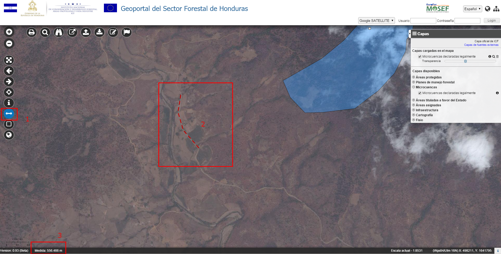
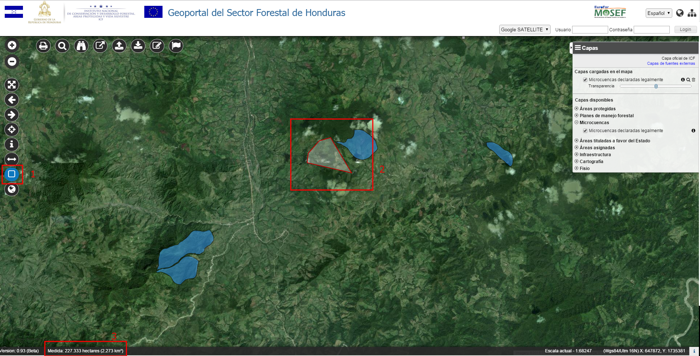

Medida de Distancias
Permite obtener la distancia entre dos puntos marcados por el usuario sobre el mapa.
Manteniendo pulsado el botón Shift, la medida es continua.

Medida de distancia
Para medir lineas (distancias):
- Activar la herramienta de medida de líneas
- Con el ratón, dibujar el camino que se quiere medir. Para terminar la medida, hacer doble clic
- La medida aparece en la barra abajo, en metros o kilómetros dependiendo de la longitud
Medida de Áreas
Permite obtener el área del polígono definido por el usuario sobre el mapa.

Para medir areas:
- Activar la herramienta de medida de áreas
- Con el ratón, dibujar el polígono que se quiere medir. Para terminar la medida, hacer doble clic
- La medida aparece en la barra abajo (Punto 3), en hectáreas y en km^2